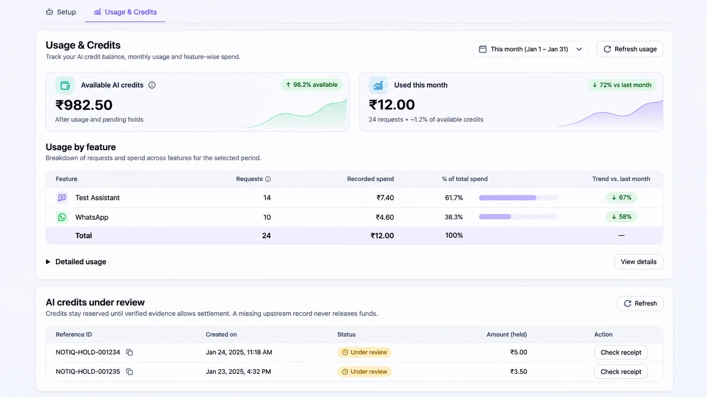
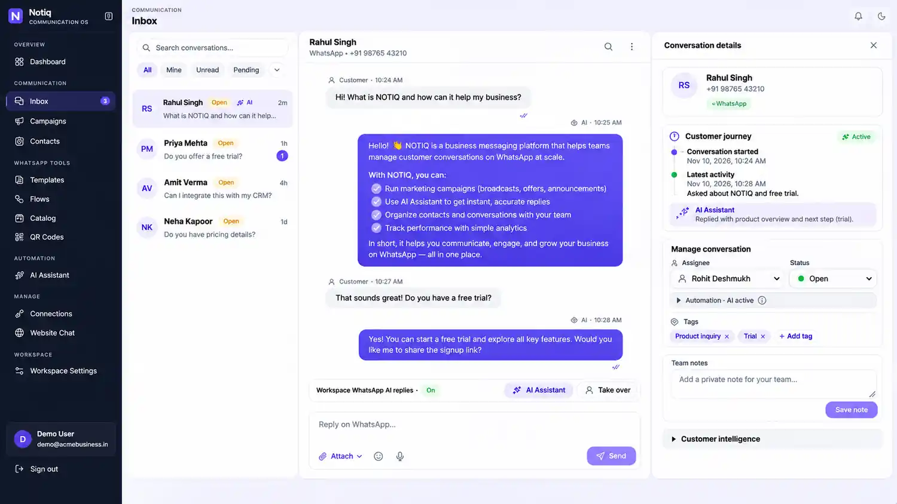
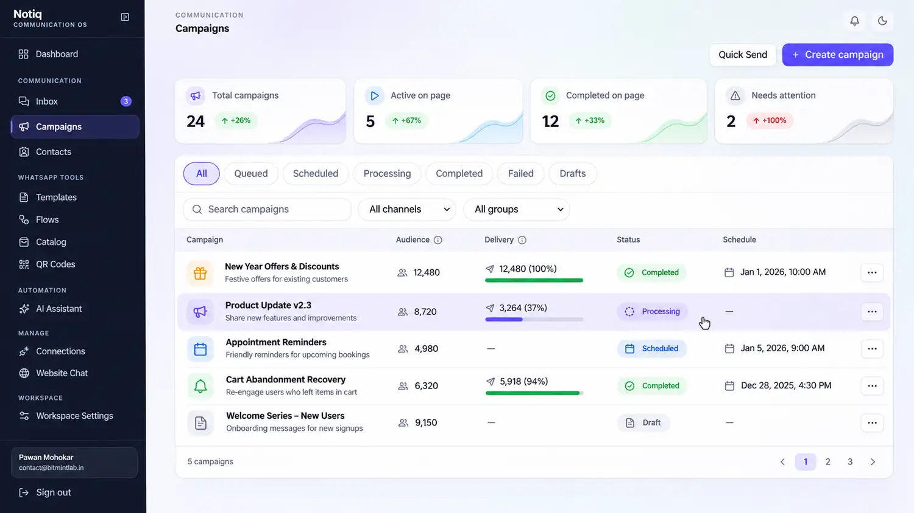

Platform Comparisons · 2026
Best Wati & AiSensy Alternatives in India (2026)
Compare WhatsApp API costs, provider fees, automation workflows and platform suitability before choosing software.
Read comparison →Learn about organized customer communication, WhatsApp campaign planning and AI assistance. Explore WhatsApp API pricing, useful automation workflows and real industry use cases alongside our foundational communication guides.
Compare WhatsApp API costs, provider fees, automation workflows and platform suitability before choosing software.
Read comparison →
Learn how Meta's message charges, subscriptions and provider markups affect your bill.
Read guide →
Explore helpful automated enquiries, reminders, support handoffs and consent-based follow-ups.
Read guide →
Ideas for D2C, coaching, marketing agencies, real estate and travel businesses.
Read guide →
Understand Meta messaging costs, automation use cases and how to evaluate WhatsApp marketing software for your business.
Read the complete guide →
How teams organize customer messages, handoffs and follow-ups.
Read article →
How to plan messaging updates and reusable templates responsibly.
Read article →
Why documents, FAQs and testing matter for knowledge-grounded assistance.
Read article →